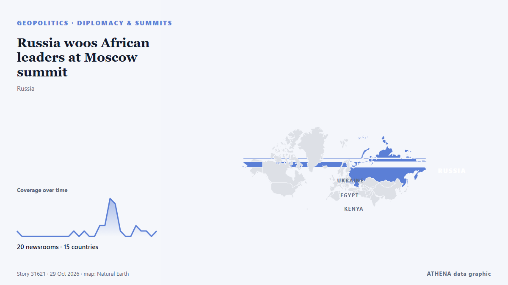

Russia woos African leaders at Moscow summit

Moscow seeks to strengthen ties with countries it sees as 'natural allies' against the West amid heavy sanctions over its Ukraine offensive. من Free Malaysia Today
نشرته بشكل مستقل 20 مصدرًا في 15 دولة منذ 26 أكتوبر، وأول من نشره Capital FM؛ والتغطية تتراجع. يقدّر ATHENA الخطر بأنه معتدل (3.5/10)، ويعود ذلك أساسًا إلى خطورة الضرر الموصوف ونطاقه الجغرافي والقطاعي. الثقة 91٪ (مرتفعة)، وعدد المصادر المستقلة المؤكِّدة: 20، بمتوسط موثوقية للمصادر يبلغ 77٪. من نقل الخبر: 4 وسائل إعلام في قطر · Qatar, 3 وسائل إعلام في فرنسا · France, 2 وسائل إعلام في المملكة المتحدة · United Kingdom. امتدت التغطية من 26 أكتوبر إلى 29 أكتوبر، على مدى 84 ساعة.
لماذا يهم: قد تغيّر التطورات الأمنية والدبلوماسية التحالفات والتجارة والأسواق إلى ما هو أبعد بكثير من الدول المعنية مباشرة.
ما الذي تغيّر: 7 تقارير جديدة من 7 غرف أخبار خلال 24 ساعة حتى 29 أكتوبر.
تُعرض العناوين بالإنجليزية كما نُشرت.
نظرة سريعة
اختير وقُيِّم وكُتب وفق منهجية ATHENA المنشورة. لا يتدخل أي محرر في الأحداث بعينها. كيف يُنتَج ›
| 26 Oct 08:49 UTC | 1 |
|---|---|
| 26 Oct 11:49 UTC | 0 |
| 26 Oct 14:49 UTC | 0 |
| 26 Oct 17:49 UTC | 0 |
| 26 Oct 20:49 UTC | 0 |
| 26 Oct 23:49 UTC | 0 |
| 27 Oct 02:49 UTC | 0 |
| 27 Oct 05:49 UTC | 0 |
| 27 Oct 08:49 UTC | 0 |
| 27 Oct 11:49 UTC | 0 |
| 27 Oct 14:49 UTC | 0 |
| 27 Oct 17:49 UTC | 1 |
| 27 Oct 20:49 UTC | 0 |
| 27 Oct 23:49 UTC | 1 |
| 28 Oct 02:49 UTC | 0 |
| 28 Oct 05:49 UTC | 0 |
| 28 Oct 08:49 UTC | 2 |
| 28 Oct 11:49 UTC | 2 |
| 28 Oct 14:49 UTC | 7 |
| 28 Oct 17:49 UTC | 6 |
| 28 Oct 20:49 UTC | 1 |
| 28 Oct 23:49 UTC | 0 |
| 29 Oct 02:49 UTC | 0 |
| 29 Oct 05:49 UTC | 2 |
| 29 Oct 08:49 UTC | 1 |
| 29 Oct 11:49 UTC | 1 |
| 29 Oct 14:49 UTC | 0 |
| 29 Oct 17:49 UTC | 1 |
| 26 Oct 08:52 UTC | 0.0 |
|---|---|
| 28 Oct 02:53 UTC | 1.9 |
| 28 Oct 14:44 UTC | 3.6 |
| 29 Oct 04:21 UTC | 3.3 |
| 29 Oct 20:34 UTC | 3.5 |
لماذا هذه الأرقام
الأهمية
الخطر
الثقة
التغطية — من نشر الخبر ومتى
العنوان كما نُشر · يفتح الأصل- Capital FM · كينيا · KenyaKenya Targets Russian Market for Tea, Coffee as Mudavadi Heads to Moscow Summit
- Amnesty International · المملكة المتحدة · United KingdomRussia: African leaders must use summit to call for an end to trafficking of Africans into Russian military
- Free Malaysia Today · ماليزيا · MalaysiaRussia woos African leaders at Moscow summit
- Al Jazeera English · قطر · Qatar‘Russia is already part of who I am’: African students in Moscow
- AllAfrica · AFRAfrica: Russia-Africa Trade Exceeds U.S.$27b
- The Straits Times · سنغافورة · SingaporePutin woos African leaders, says Russia a better partner than 'colonial' West
- Vanguard · نيجيريا · NigeriaRussia woos African leaders at Moscow summit
- Cyprus Mail · قبرص · CyprusPutin woos African leaders, says Russia is better partner than ‘colonial’ West
- The Independent · المملكة المتحدة · United KingdomPutin tells African leaders Russia is their partner against 'colonial' West
- Bangkok Post — page reader · تايلاند · ThailandRussia woos African leaders at Moscow summit
- EUobserver · بلجيكا · BelgiumPutin faces African anger in Moscow on ‘coercive’ recruits to Russian army in Ukraine
- Club of Mozambique · موزمبيق · MozambiquePutin woos African leaders at showcase summit, says Russia is better partner than ‘colonial’ West
- GBC Ghana Online · غانا · GhanaPutin calls for stronger African role in global financial institutions
- Al-Monitor · الولايات المتحدة · United StatesEgypt’s Sisi, Putin meet as Russia steps up Africa push: What to know
- France 24 English · فرنسا · FrancePutin woos African leaders as Moscow seeks to expand footprint in Africa
- Cyprus Mail · قبرص · CyprusPutin woos African leaders, says Russia a better partner than ‘colonial’ West
- Al Jazeera English · قطر · QatarPutin tells African leaders Moscow will not pursue ‘neo-colonialism’
- Al Jazeera English · قطر · QatarPutin: Russia is African continent’s best partner, not ‘colonial’ West
- GBC Ghana Online · غانا · GhanaPutin calls for stronger African role in Global Financial Institutions
- The Rio Times · البرازيل · BrazilPutin Criticizes Sanctions at Africa Summit
- France 24 English · فرنسا · FranceRussia woos African leaders at Moscow summit
- RFI English · فرنسا · FranceRussia-Africa summit tests Moscow's ambitions for broader influence
- AllAfrica · AFRAfrica: Russia-Africa Summit to Test Moscow's Ambitions for Broader Influence
- The New Arab · INTPutin woos African leaders at a Moscow summit
- Stuff · نيوزيلندا · New ZealandPutin woos African leaders at a Moscow summit aimed at expanding Russia-Africa ties
- Al Jazeera English · قطر · QatarDoes Russia offer African countries an equal partnership?